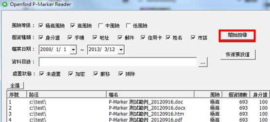

當個資檔案數量過多時，可以透過「搜尋」功能縮小個資檔案的範圍，使用者設定完搜尋條件後，按下「開始搜尋」就可進行搜尋。

系統支援的搜尋條件如下：
- 風險等級：支援「極高」、「高」、「中」、「低」風險等級的搜尋。例如勾選「極高」風險後進行搜尋，系統就只會列出「極高」風險的個資檔案。
- 個資種類：支援「身分證」、「手機」、「地址」、「郵件」、「信用卡」、「姓名」以及「市話」。
- 檔案日期：依照檔案的最後修改日期進行查詢。例如搜尋2012/12/1~2012/12/31，系統就會顯示最後修改日期介於這段期間的檔案。
- 資料目錄：依照檔案所在位置進行搜尋。例如搜尋c:\ 系統就會顯示出c:\底下的所有個資檔案。
- 處置狀態：依照檔案的處置狀態進行搜尋，狀態分為「未處置」、「加密」、「搬移」以及「排除」。
註：P-Marker Reader 可以讓使用者將個資檔案進行加密、搬移到特定位置或是標記排除，若該檔案並未進行「加密」、「搬移」或是「排除」，系統會將檔案視為「未處置」，相關內容請參考後續章節介紹。